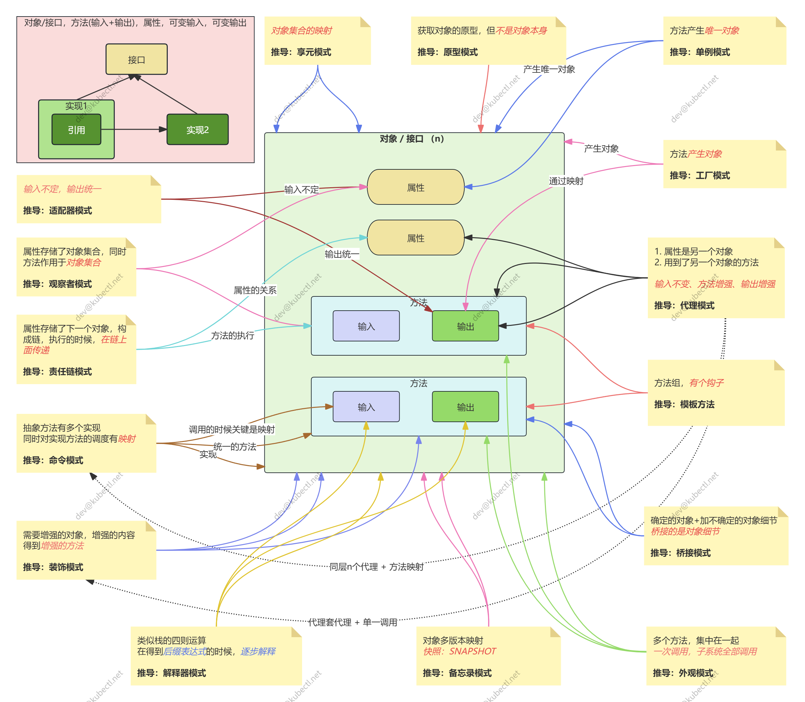

Design Pattern
六大原则
这些原则主要用于审视面向对象设计中的职责、契约与依赖。其中前五项通常合称 SOLID，迪米特法则是另一条常用的设计指导。
原则 | 核心含义 | 需要避免的误解 |
|---|---|---|
单一职责（Single Responsibility Principle） | 一个模块应围绕同一类职责组织，因同一类原因而变化 | 不是一个类只能有一个方法，也不是把每个动作都拆成一个类 |
开闭原则（Open-Closed Principle） | 针对预期的变化，通过扩展行为，减少对稳定代码的修改 | 不是代码写完后永远不能修改，更不是预先为所有可能性留接口 |
里氏替换（Liskov Substitution Principle） | 子类型替换父类型后，仍应满足调用方依赖的行为契约 | 能通过编译不代表可以替换；不能加强前置条件、削弱后置条件或破坏不变量 |
依赖倒置（Dependency Inversion Principle） | 高层策略与底层细节都依赖抽象，细节围绕抽象实现 | 不是每个类都要配一个接口，也不等同于使用依赖注入框架 |
接口隔离（Interface Segregation Principle） | 调用方不应被迫依赖自己不需要的能力，接口应按使用者的需要划分 | 不是接口越小越好；过度拆分也会增加理解和组装成本 |
迪米特法则（Law of Demeter） | 对象尽量只与直接协作者交互，减少对其他对象内部结构的了解 | 不是禁止所有链式调用，也不是机械增加一层层转发方法 |
这些原则共同关注的是： 一处需求变化，会迫使多少本不相关的代码一起变化？
例如，订单结算依赖的是“完成支付”的业务能力，而不是某个支付 SDK 的参数格式。把 SDK 适配放在边界处，可以减少第三方接口变化对业务流程的影响。但抽象仍需说明金额单位、支付结果、失败语义与重复请求的处理方式；只有一个接口名称，并不能隔离这些差异。
经验性总结
抽象不是隐藏过程，而是建立边界
面向对象强调对象的职责与协作，但最终仍然需要落实为具体的计算与状态变化。 input → function → output 可以帮助理解一次计算，却不足以描述所有行为：方法还可能读取或修改状态、访问外部资源、抛出异常，甚至无法结束。
因此，理解一个行为时，除了输入和输出，还要追问：
依赖什么？ 包括输入数据、已有状态、外部服务，以及隐含的时间或顺序要求。
改变什么？ 包括返回值、内部状态和对外部系统的副作用。
保证什么？ 包括成功条件、失败语义，以及执行前后必须成立的不变量。
抽象的价值在于承上启下： 向上提供稳定的能力与契约，向下容纳具体的实现与变化 。调用方可以不理解实现细节，但不能不理解使用这项能力的条件和代价。
目标不是代码最少，而是整体成本可控
“用最少的代码做最多的事”表达了对简洁的追求，但代码行数不是设计质量的充分指标。
把所有逻辑集中在一个函数中，可能减少类与接口，却让每次修改都影响整个流程；为每个分支建立一套抽象，也可能让简单需求需要跨越许多文件才能理解。
更合理的目标是： 在满足正确性与现实约束的前提下，降低理解、修改、验证和运行系统的总成本。
重复代码不一定需要立刻合并。两段代码即使长得相似，如果服务于不同业务规则、将来因不同原因变化，强行共用反而会把无关需求绑在一起。应优先抽象稳定的业务关系，而不是只消除表面的语法重复。
模式依赖语言，但不局限于类图
经典设计模式大量采用面向对象的表达方式，但它们处理的创建、组合与协作问题，并不只存在于面向对象语言中。
同一种关系可以有不同实现：策略可以是一个接口，也可以是函数参数；对象创建可以由工厂封装，也可以使用普通构造函数；有些委托行为可以通过语言提供的机制直接表达。
应当先看语言已经提供了什么，再决定是否需要额外结构。 模式名称用于交流设计意图，不是要求代码必须长成某一张类图。
从需求关系推导设计模式
与其先问“这里能用什么模式”，不如先问“什么保持稳定，什么需要变化，以及谁应当知道这个变化”。
先找到变化，再决定如何隔离
以订单金额计算为例：
明确结果与约束 ：使用什么金额单位，优惠如何叠加，何时舍入，最终金额是否允许为负。
区分稳定流程与变化规则 ：结算需要得到金额，但不同活动的优惠算法可能变化。
确定边界与契约 ：输入是哪些订单信息，规则是否允许修改订单，输出是优惠金额还是应付金额。
选择最简单的表达 ：只有一种固定规则时，普通函数可能足够；需要替换算法时，再考虑策略模式或函数参数。
验证变化是否被限制在边界内 ：新增活动时，稳定的结算流程是否仍然清晰，既有规则是否仍能独立测试。
如果真正变化的是“多条优惠规则的执行顺序与叠加关系”，单纯替换一个策略就未必合适，需要明确规则组合与冲突处理。模式不能代替业务决策，也不能自动保证金额正确。
按设计意图区分模式
下面不是完整的模式目录，而是一些从需求关系出发的判断线索：
需求中的关系 | 可以考虑的模式 | 关键区别与代价 |
|---|---|---|
调用方不应了解具体对象的创建与选择过程 | 工厂方法、抽象工厂 | 前者通过可覆写的创建方法提供扩展点，后者提供一组相关产品的创建接口；简单创建未必需要这些结构 |
同一项能力存在可替换的算法 | 策略 | 隔离算法变化，但仍需有人负责选择策略 |
现有组件的接口与调用方期望不一致 | 适配器 | 转换接口与数据；无法仅靠形式转换消除业务语义差异 |
保持接口的同时，按需叠加行为 | 装饰器 | 重点是职责组合，需要留意包装顺序及其对行为的影响 |
需要控制对目标对象的访问 | 代理 | 重点是访问控制、延迟加载或远程访问等；结构可能像装饰器，意图却不同 |
抽象层与实现层需要独立扩展 | 桥接 | 将两个变化维度用组合连接，而不是为所有组合建立子类 |
流程骨架稳定，部分步骤由子类定制 | 模板方法 | 复用流程，但引入继承约束；若步骤需要灵活组合，可考虑委托 |
一次变化需要通知多个订阅者 | 观察者 | 解耦通知者与订阅者，但还需明确订阅生命周期、通知顺序和失败处理 |
请求需要沿多个处理者传递 | 责任链 | 明确继续、终止与无人处理的规则，避免流程变得难以追踪 |
请求需要作为数据被传递、排队或记录 | 命令 | 封装请求及其执行所需信息；撤销、重试并不是封装后自动获得的能力 |
创建型模式关注对象如何产生，结构型模式关注对象如何组合，行为型模式关注职责如何分配与协作。这些分类有助于理解，但不能仅凭“持有另一个对象”或“调用另一个方法”判断用了哪种模式。
推导图的使用边界
下面的图保留了从对象、属性、输入输出和方法调用关系理解模式的思路，适合用来联想与回顾，而不是作为严格的推导规则。

读图时，需要用设计意图补充结构上的相似性：
“行为增强”不一定是代理，更可能是在组合职责的装饰器；关键在于解决什么问题。
观察者的核心是订阅与通知关系，不是某个属性恰好存储了对象集合。
享元的核心是共享可复用的内部状态，并将依赖使用场景的外部状态分离，不只是对象映射。
单例需要说明唯一性的范围与生命周期，不能仅凭一个方法返回相同对象就判断设计合理；全局可变状态还会带来测试隔离和并发访问问题。
相似的结构可以表达不同的模式，同一种模式也可以采用不同的代码结构。
从结果倒推正确性
“结果正确 = 起点正确 + 过程正确”可以作为思考提示，但不是一个充分的证明。需要先把“正确”写成明确的条件，再检查步骤之间能否衔接。
前置条件 ：操作开始前需要满足什么，例如金额单位一致、订单处于可结算状态。
后置条件 ：操作成功后保证什么，例如返回金额符合舍入规则。
不变量 ：在约定的操作边界上必须保持什么，例如订单明细与总额一致。
失败语义 ：操作失败后留下什么状态，是否允许重试，是否可能产生重复副作用。
每一步单独正确，不代表组合起来就正确。上一步的输出与状态必须满足下一步的前置条件；组合还必须保持整体不变量，并处理共享状态、执行顺序和失败路径带来的影响。
例如，优惠计算返回了正确金额，支付接口也正确处理了单次请求，但结算流程在超时后盲目重试，仍可能重复扣款。此时需要明确幂等与支付结果确认机制，而不是再加一个模式名称。
设计模式帮助组织实现， 业务契约与验证才决定这种组织是否满足需求。
设计检查清单
要解决什么真实问题？ 先描述需求、约束与变化，不以使用某个模式为目标。
哪些关系稳定，哪些因素会变化？ 抽象应隔离有依据的变化，而不是猜测所有未来需求。
职责与依赖是否清晰？ 谁决定规则，谁执行细节，谁负责对象创建与生命周期？
契约是否足够明确？ 输入输出之外，是否说明状态、副作用、失败与顺序要求？
抽象是否值得？ 减少的修改范围，是否足以抵消新增的间接调用、类型与配置成本？
如何验证设计？ 用一次具体的需求变化检查影响范围，并验证边界条件、替换实现与失败路径。
好的设计不是模式最多，而是关系表达清楚、变化边界合理，并且能用最简单的可行结构持续满足需求。